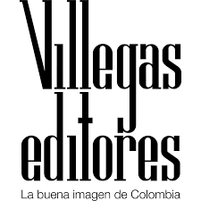

La Misión de Ciencia, Educación y Desarrollo no ha pretendido una respuesta, pero ha querido diseñar una carta de navegación que tal vez ayude a encontrarla. Creemos que las condiciones están dadas como nunca para el cambio social, y que la educación será su órgano maestro. Una educación desde la cuna hasta la tumba, inconforme y reflexiva, que nos inspire un nuevo modo de pensar y nos incite a descubrir quiénes somos en una sociedad que se quiera más a sí misma. Que aproveche al máximo nuestra creatividad inagotable y conciba una ética -y tal vez una estética- para nuestro afán desaforado y legítimo de superación personal. Que integre las ciencias y las artes a la canasta familiar, de acuerdo con los designios de un gran poeta de nuestro tiempo que pidió no seguir amándolas por separado como a dos hermanas enemigas. Que canalice hacia la vida la inmensa energía creadora que durante siglos hemos despilfarrado en la depredación y la violencia, y nos abra al fin la segunda oportunidad sobre la tierra que no tuvo la estirpe desgraciada del coronel Aureliano Buendía. Por el país próspero y justo que soñamos: al alcance de los niños.

|
 |